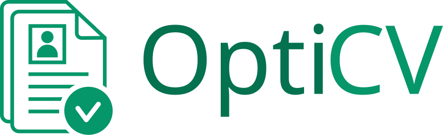
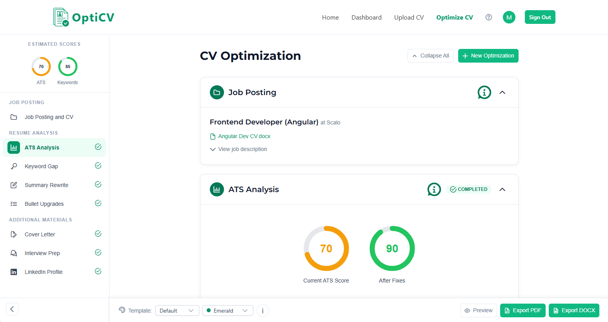
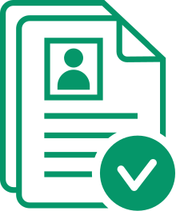
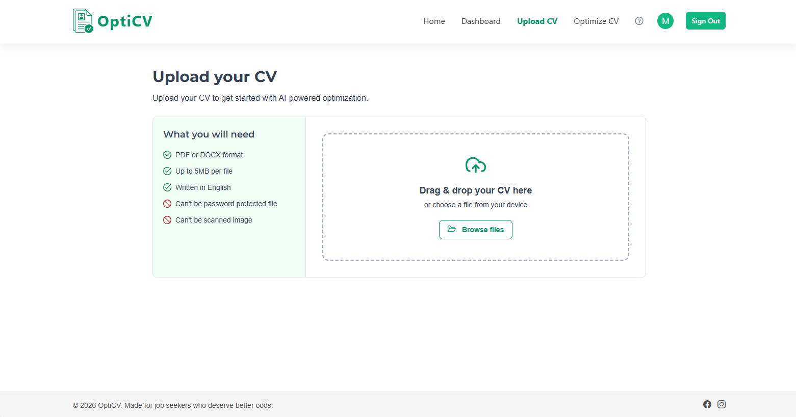

Each shows a new user the whole OptiCV flow using your six screenshots. They're live — click the dots, steps and buttons. Reference them in chat as 1a, 1b, 1c.


Getting started{{ aStep.caption }}
From CV to interview in six quick steps.
{{ bStep.caption }}

AI rewrites your CV for the exact job you're chasing — so it passes ATS filters and lands on a real recruiter's desk.
{{ cStep.caption }}
Upload your CV to run your first optimization — you'll have an ATS-ready version in under two minutes.